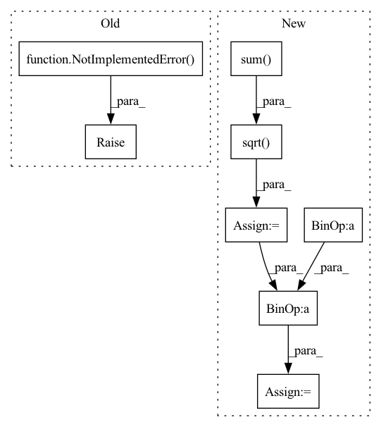

Pattern ID :32998
Before Change
raise NotImplementedError( "Not Implemented.")
def absolute_difference_error(output, target, is_mean=False, axis=-1, name="absolute_difference_error_loss"):
Return the TensorFlow expression of absolute difference error (L1) of two batch of data.After Change
nmse_a = torch.sqrt(torch.sum(torch.square(output - target), dim=-1))
nmse_b = torch.sqrt(torch.sum( torch.square(target), dim=-1) )
if reduction == "mean":
nmse = torch.mean(nmse_a / nmse_b)
elif reduction == "sum":
nmse = torch.sum(nmse_a / nmse_b)
elif reduction == "none":
nmse = nmse_a / nmse_b
else:In pattern: SUPERPATTERN
Frequency: 3
Non-data size: 8
Instances Fragment ID: 95477187
Project Name: tensorlayer/tensorlayerx
Commit Name: 21bf2328ccadff5a24520c774d17bfd6d5e05fa4
Time: 2022-01-26
Author: laicheng_vip@163.com
File Name: tensorlayerx/losses/torch_cost.py
M Class Name: AnonimousClass
N Class Name: AnonimousClass
M Method Name: normalized_mean_square_error(3)
N Method Name: normalized_mean_square_error(4)
M Parent Class:
N Parent Class:
M File Name: tensorlayerx/losses/torch_cost.py
N File Name: tensorlayerx/losses/torch_cost.py
M Start Line: 122
M End Line: 138
N Start Line: 120
N End Line: 131
Before Change
Returns: values of Ven * psi
"""
raise NotImplementedError()
def nuclear_repulsion(self):
"""Compute the nuclear repulsion term
After Change
for iatom in range(self.natom):
patom = self.ao.atom_coords[iatom, :]
Z = self.ao.atomic_number[iatom]
r = torch.sqrt(((pelec - patom)**2).sum( 1) ) // + 1E-12
p += - Z / r
return p.view(-1, 1)
def nuclear_repulsion(self): Fragment ID: 95477189
Project Name: nlesc-jcer/qmctorch
Commit Name: adaaa1ed349fb72bbacad1c74788252742eddbf5
Time: 2020-05-25
Author: nicolas.gm.renaud@gmail.com
File Name: qmctorch/wavefunction/wf_base.py
M Class Name: WaveFunction
N Class Name: WaveFunction
M Method Name: nuclear_potential(2)
N Method Name: nuclear_potential(2)
M Parent Class: torch.nn.Module
N Parent Class: torch.nn.Module
M File Name: qmctorch/wavefunction/wf_base.py
N File Name: qmctorch/wavefunction/wf_base.py
M Start Line: 50
M End Line: 50
N Start Line: 72
N End Line: 82
Before Change
Returns: values of Vnn * psi
"""
raise NotImplementedError()
def kinetic_energy(self, pos):
"""Main switch for the kinetic energy."""
After Change
for at2 in range(at1 + 1, self.natom):
c1 = self.ao.atom_coords[at2, :]
Z1 = self.ao.atomic_number[at2]
rnn = torch.sqrt(((c0 - c1)**2).sum() )
vnn += Z0 * Z1 / rnn
return vnn
def kinetic_energy(self, pos): Fragment ID: 95477210
Project Name: nlesc-jcer/qmctorch
Commit Name: adaaa1ed349fb72bbacad1c74788252742eddbf5
Time: 2020-05-25
Author: nicolas.gm.renaud@gmail.com
File Name: qmctorch/wavefunction/wf_base.py
M Class Name: WaveFunction
N Class Name: WaveFunction
M Method Name: nuclear_repulsion(1)
N Method Name: nuclear_repulsion(1)
M Parent Class: torch.nn.Module
N Parent Class: torch.nn.Module
M File Name: qmctorch/wavefunction/wf_base.py
N File Name: qmctorch/wavefunction/wf_base.py
M Start Line: 57
M End Line: 57
N Start Line: 94
N End Line: 103